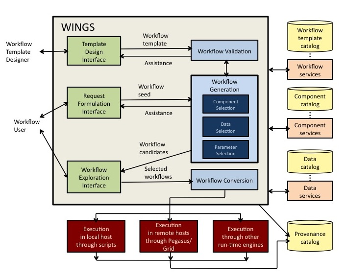

WINGS is a semantic workflow system that assists scientists with the design of computational experiments. A computational experiment specifies how selected datasets are to be processed by a series of software components in a particular configuration. Earth scientists use computational experiments to estimate seismic hazard through simulations of earthquake forecasts. Biologists use computational experiments for analysis of gene expression microarray data or molecular interaction networks and pathways. Social scientists analyze large social networks to discover structural regularities based on mining relations among individuals.
A unique feature of WINGS is that its workflow representations incorporate semantic constraints about datasets and workflow components. WINGS reasons about dataset properties and component constraints to create and validate workflows and to generate metadata for new data products. WINGS uses Pegasus or OODT as the execution engine for large-scale distributed workflow execution. A high-level diagram of architecture of WINGS is shown here:

WINGS allows users to express high-level descriptions of their analysis goals, and assists them by automatically and systematically generating possible workflows that are consistent with that request. A high-level user request is one that only partially specifies what datasets, parameters, or software components are to be used. Users can be assisted in an interactive mode, where WINGS generates suggestions and validates their inputs, or in an automatic mode, where WINGS can elaborate their initial request and present the user with execution-ready workflows as options. WINGS generates workflows in three-stages search process. First it selects components for each step in the workflow. Then it selects datasets from the catalogs to elaborate the initial workflow request and its template. Finally it configures the parameters for each component in the workflow. During the search process, WINGS eliminates workflow candidates that are not viable because they contain invalid combinations of choices. Once a workflow candidate is fully elaborated, WINGS expands the workflow to specify any parallel computations over dataset collections. For all the new data products, it generates metadata attributes by propagating metadata from the input data through the descriptions and constraints specified for each of the components. The entire workflow creation and generation process is annotated in detail in a provenance catalog for later inspection.
WINGS is built on open web standards from the World Wide Web Consortium (W3C) such as the Web Ontology Language (OWL), the Resource Description Framework (RDF), and the SPARQL query language for RDF. The core ontologies are defined in OWL, while workflow templates, requests, and candidates are expressed in RDF. Many constraints are represented as RDF triples, others that are more complex are represented via Jena Rules.
The WINGS workflow system has an open modular design and can be easily integrated with other existing workflow systems and execution frameworks to extend them with semantic reasoning capabilities. We have integrated the Wings semantic workflow system with a variety of user interfaces, and submitted workflows with a variety of execution engines. WINGS assumes external catalogs of software components and datasets that can be accessed through services. This is an important feature, since scientific environments consist of distributed services to access the data and algorithms necessary for data analysis. Many collaborations are set up where each institution may contribute resources (data, instruments, computers, software) by making them available to others while being maintained by the institution. Data providers may provide services to access data sources. There can be many organizations playing the role of data providers, and as a result data may be accessible in various catalogs that are in distributed remote locations. Other organizations may provide algorithms, services, models, or implemented codes that can process data and can be used as components of workflows. Each provider maintains the resources they contribute. Therefore, the WINGS architecture is designed to interface with external data and component catalogs.
WINGS provides a range of workflow execution alternatives. In cases where privacy or off-line use are important, WINGS can submit workflows in a scripted format for execution in the local host. In cases where scale is important, WINGS can submit workflows to Pegasus or OODT which will manage their execution in shared distributed resources in an efficient and scalable manner. Pegasus selects computational resources, optimizes the workflow structure, submits the workflow for execution, monitors its progress, and resolves possible failures. WINGS has also been integrated with a variety of alternative execution engines, such as the System S engine for data stream processing and BPEL4WS engines.
WINGS can be used as a web application without requiring users to install any software. We offer a WINGS sandbox where anyone can use WINGS with a simple set of workflows that we have developed for tutorial purposes. The Wings Semantic Workflow Reasoner runs in the background, the user interface is the Wings Web Portal, and the execution is done by Pegasus or OODT.
There are several Wings installations (ranging from older versions to newer versions) that contain workflows in diverse application areas, all of them require setting up an account to access:
To download and install the WINGS software, visit our release pages